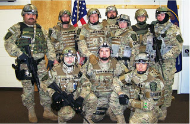

| Deputy Creeper, I presume? Scott Womack in court. |
In Utah, as elsewhere in the Soyuz, “battering” a police officer is considered an especially
grievous crime. Until earlier
this year, this offense was treated as a Class A misdemeanor. Under SB 131, a
measure enacted earlier this year by the state legislature, it is now a class C
felony.
Any incidental contact between a Mundane and the sanctified
personage of a police officer – including the act of breathing on an officer –
can be prosecuted as “battery.” This would apply to cases in which a woman is
desperately trying to prevent an officer from violating her sexually: A victim who puts up
resistance in such circumstances can expect to be violently subdued, arrested,
and charged with “assaulting an officer.”
In Utah, a victim of a sexual assault by a police officer
could easily find herself convicted of a felony unless she submits with
docility to whatever the armed predator is willing to inflict on her. On the
other hand, if the officer is exposed as a sex offender, it’s quite likely that
he would face misdemeanor charges. This is illustrated by the case of former
Box Elder County Sheriff’s Deputy Scott
Womack, who is facing multiple lawsuits and criminal charges involving
illegal strip-searches of young women conducted during traffic stops over a
period of about two years.
In February, Womack
pleaded no contest to three counts of attempted custodial misconduct –
which is a misdemeanor offense. In exchange for Womack’s plea, county
prosecutors dropped nine additional charges – all of them misdemeanors, as
well.
Under the plea bargain agreement, Womack’s name would not be
permanently inscribed in the sex offender registry – despite the fact that his
acts are, by definition, those of a violent sex offender. Since the charges
against him are misdemeanors, Womack would eventually be eligible for the
restoration of his peace officer certification. Womack
does face federal criminal charges and federal lawsuits filed by three of
his victims, but it’s likely that most, if not all, of the trouble he faces
would be made to disappear once the first state case against him is closed.
After he was arraigned, Womack was compelled to surrender
his passport and to avoid contact with the victims. However, he has been free
during the legal proceedings. During a court hearing in early May, Womack –
surrounded by family and other supportive spectators – “waited for the judge to
call his case sitting in a back room of the court, shrouded by blinds that
court workers said [are] typically reserved for victims who do not want to be
seen by defendants,” reported
the Salt Lake Tribune.
| Check into the Creep Motel, Womack. |
In other words, the impenitent predator was dealt with as if he were the victim, cosseted and
sheltered and treated with gentle deference. He has been allowed to remain at
large despite the fact that at least one of the victims, Brigham City resident
Holly Griffin, said that she was afraid of retaliation by Womack “because he
had my address.”
Griffin’s fears were amply justified. During a traffic stop
not far from her home, Womack – in what would emerge as his modus operandi –
claimed that Griffin was wanted on a narcotics warrant, and would be handcuffed
and taken to the county jail unless she submitted to an invasive inspection for
tattoos, piercings, and other identifiers.
“When he returned to my car [after getting the driver’s
license and registration], he explained that there was a warrant out for me in
Summit County,” Griffin
told the Salt Lake City ABC affiliate. “I told him I had not been to Summit
County in a few years and that I had never done anything wrong in my life.”
Womack presented Griffin with two options: Submit to a
partial strip search, or go to jail. When she requested that a female officer
conduct the search, Womack replied that none was available.
“He asked me to life up my shirt up to my bra, lift down my
pants to expose my upper thigh, and to show my lower leg,” the victim recounts.
After she had satisfied the armed stranger’s demands, Womack released her
without issuing a citation or a warning. Understandably traumatized by her
experience, Griffin didn’t file a complaint – until after another victim,
18-year-old Tamsen Reid, filed a federal lawsuit against Womack and Box Elder
County.
On November 20, 2010, Reid – who was 17 at the time – was
one of five teenagers in a car that was stopped by Womack during a snowstorm.
Womack claimed that the driver was speeding. After noticing that one of the
teens was smoking, Womack ordered the driver and the passengers out of the car
to search the vehicle for drugs.
After running the IDs of the five teenagers, Womack claimed
that three of them – all of them young women, wouldn’t you know – had
outstanding drug warrants in other jurisdictions. He had Reid and her female
friends stand barefoot in the snow while lifting up their shirts and their
bras, ostensibly to search for drugs.
For some reason, the costumed creeper took a special
interest in Reid. Womack claimed that Reid was wanted in that state for heroin
possession. This led the young woman, who had not been to Arizona and had never
done heroin, to suggest that she might be the victim of identity theft.
Displaying the affected solicitude of a practiced molester,
Womack told the frightened girl that she could clear things up right away, if
she would simply get into his patrol vehicle and undress so he could inspect
her for distinctive tattoos and piercings. Her only other alternative was to be
handcuffed and booked into jail.
Terrified, and most likely nauseous, Reid complied. This
prompted the predator to escalate his demands: He claimed that it was necessary
for the teenager to spread her legs in order for him to determine if she had a
distinctive tattoo in her genital region. At that point, Reid finally rebelled,
telling the perverted stranger that the examination was over. Womack issued a
warning to the driver, and the teenagers went on their way.
At the time, Reid later recalled, the teens were relieved,
rather than outraged, because nobody got a ticket.
 |
| Womack's comrades at the BCSO. |
About ten months later, following her 18th
birthday, Reid contacted the Box Elder Sheriff’s Office to have the spurious
drug warrant removed from her record. The clerk with whom Reid spoke informed
her that there was no warrant, and never had been.
Reid also found out that
Womack didn’t file a record of the traffic stop or the warning he had issued to
the driver. She was also told that her that several other complaints had been
received about Womack’s behavior.
Shortly after Reid filed a lawsuit against Box Elder County,
Womack was allowed to “leave employment” at the Sheriff’s Office – but he was
permitted to keep his law enforcement certification until the lawsuit was made
public. By that time it had been known, for more than a year, that Womack was
in the habit of conducting undocumented traffic stops in which he neither filed
reports nor turned on his dashcam recorder.
In the August 2011 press conference announcing her lawsuit,
Reid insisted that, however inexplicably, she still “believed in law
enforcement,” but that her experience left her experiencing nightmares that
would cause her to “wake up screaming.”
The indelible trauma experienced by Reid and Womack’s other
victims could easily have turned out even worse if any of them had put up even
the slightest physical resistance to the deputy’s sexual assaults.
Reid, who was undressed and alone in Deputy Aqualung’s Creepmobile, might
consider herself to be blessed: If Womack had decided not to let the victim
leave after she refused to undergo a genital examination, Reid most likely
would have been arrested for resisting arrest and “assaulting” the sexual
predator who had detained her.
Womack is hardly the first uniformed sociopath to force
females to disrobe at gunpoint. In
2009, the City of Scottsdale, Arizona hit up local tax victims to pay a
$315,000 settlement to a 19-year-old woman who was the victim of a similar
sexual assault by former Police officer Chong Kim. In that case, the
19-year-old made the mistake of calling the police for “help” with intruders in
her apartment. When Chong arrived, he noticed that the teenager had been
drinking, a
fact that he used as leverage to order her to “get naked.” After that woman
filed a complaint, it
was discovered that Chong had committed similar crimes against as many as 20
other women. Chong was forced to resign. There is no record of him being
prosecuted for his crimes.
Under SB 131, the newly enacted Utah law on “battering” a
law enforcement officer, a future victim of a similar sexual assault by a cop –
and there will be others – could be
charged with a felony if she tries to escape.
During a February 7 Utah Senate Judiciary Committee hearing
on SB 131, State
Senator Aaron Osmond explained that he filed the bill in response to a “constituent
request” from a police officer in his district. Osmond
recruited four students from Copper Hills High School to serve as “co-presenters”
of the bill.
Each of these earnest young people dutifully recited pious
platitudes about the sterling nobility of the state’s armed enforcement caste,
the
all-encompassing danger in which they constantly find themselves, the
vulgar ingratitude of those who would criticize them, and the moral obligation
of the public “to protect them” (yes, one witness actually used those words).
The last witness, a young woman named Allison (whose last
name I will not mention), denounced “aggressors” who would do injury to “the
heroes who promote our well-being every day…. Let’s do all we can to increase
the safety of our honorable officers.”
Dear Allison: Have you met Tamsen Reid? I’m sure she would
be interested in having a chat with you about the uniformed hero who was so
zealous to promote Reid’s “well-being” that he tried to force her, at gunpoint,
to undergo an unauthorized gynecological exam in his patrol vehicle.
Dum spiro, pugno!